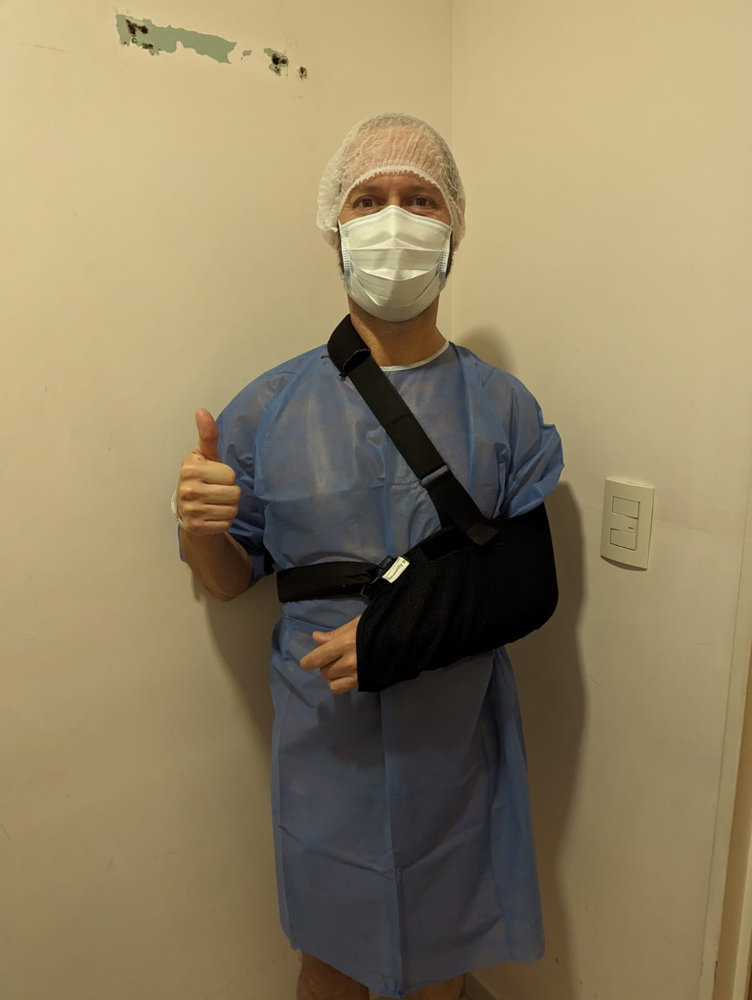
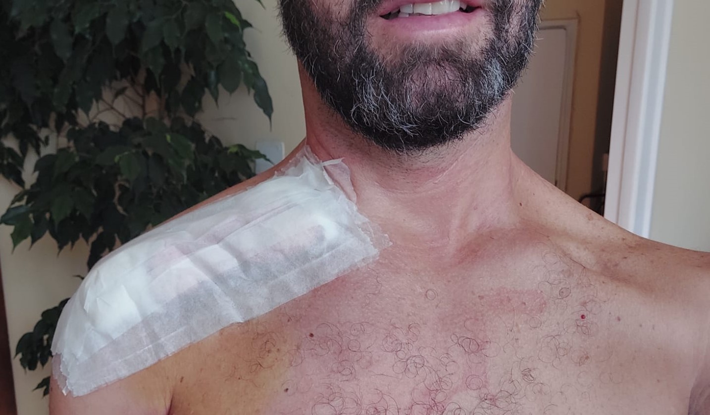
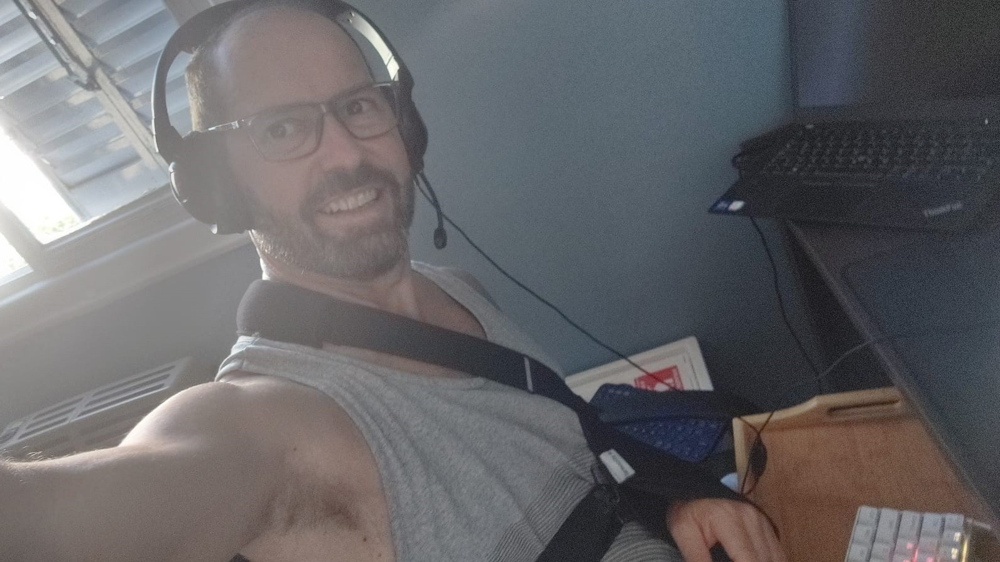

Anatomía de una Clavícula
Sábado 17 Feb 2024 (Semana 1)
La caída:
La Plata, nos juntamos para una salida social como 70 ciclistas. Algunos íbamos a hacer 80km, otro pelotón iba a ir más tranqui y estimaban 50km. Todo venía normal, y aprox en el km 50 y pico, dejando la botella de agua... el de adelante mío frena y se cruza hacia la derecha, muy rápido.Conclusión: voy al piso más rápido de lo que me imaginé, no tuve tiempo ni de poner las manos.
Parece que el golpe fué fuerte porque recuerdo ver que se me acercaba el piso (al caer) pero no el golpe y cuando abrí los ojos de vuelta (me desperté) el pelotón estaba parado, tenía 3 personas (algunos eran médicos que rodaban con nosotros) hablandome y preguntandome si podía mover las piernas y yo estaba medio nervioso que seguía acostado en el medio de la calle (quería sentarme). Cuando me dejan sentar, viendo que estaba conciente, levantan mi bici a la camioneta de apoyo que venía atrás con nosotros y me llevan a un hospital.
Los Hospitales:
Esta era mi "facha" al entrar a cada hospital, con zapatos de ciclismo (que tienen una traba que hace ruido a estar caminando con tacos, un raspón considerable en la espalda y claramente con dolor)1ero: Uno público en La Plata (no recuerdo el nombre) estaba lleno de gente y directamente en recepción me dicen que el traumatólogo estaba en una emergencia e iba a tardar.
2do: Hospital Español (también en la plata). El traumatólogo estaba de guardia pasiva (en su casa) así que me atendió un médico clínico que le hacía consultas online, me hicieron una placa y la respuesta del trauma (después de un par de hs) fué que la clavícula está quebrada pero eso con cabestrillo y reposo se suelda solo, no hay que hacer nada.

Alivio que no haga falta yeso ni placa para unir los huesos, pero también raro. El clínico igual me dijo: mirá, yo iría a ver a otro traumatólogo por las dudas, ese hueso está muy encimado y yo no soy experto pero pareciera que no va a soldarse bien si no se opera.
Le pedí algo para el dolor, me recetó diclofenax y keterolac (si hiciera falta) y a pedido de quienes me estaban acompañando (Basti y Hernan, ciclistas que habían venido conmigo) me dieron una inyección que no se que era, pero me alivió el dolor hasta el otro dí
3ro: Hospital Italiano: al otro día (Domingo 18) fuí al hospital que está a 2 cuadras de casa y me vuelven a hacer placas y me pide que vea mañana al experto en hombro porque para el eso hay que operar.

El experto en hombro (Lunes 19) no lo cubría mi obra social (Swiss Medical) y la consulta me salió 34.000$ (aprox 34u$s) me dijo que hay que operar SI o SI. Eso no se va a soldar bien y no solo eso, el recomienda operar en cuanto antes.
Hizo un dibujo para explicar cómo está mi clavícula hoy (arriba) y cómo va a quedar luego de la operación (abajo)
Me dijo que la obra social suele tardar entre 10 a 12 días en aprobar esas operaciones y si lo quiero hacer antes debería cubrirlo en modo particular.
Al principio dije que si, llamó a su jefe, coordinaron para hacerla en 3 días (y mientras me mandaron a hacerme el pre quirurgico que consiste en un electro, análisis de sangre y vacuna antitetánica). Me dieron instrucciones para comprar jabón especial y una crema para la nariz antibactericida que los use desde ese día.
Pero cuando me llegaron los precios de lo que saldría si lo hago particular, honorarios del doctor, alquiler de quirófano y costo de la placa que me iban a poner en la clavícula con tornillos (rondaban los 5.500u$s).
Preocupado por el precio y por lo que me dijeron que era mejor hacerlo rápido, me fuí el mismo día por la tarde a buscar más opiniones.
4to: Hospital Alemán: Cola de 20 metros fuera del hospital solo para anunciarte en emergencias. Había mucha gente peor que yo, cuando me atienden les digo que tengo la clavícula quebrada y me gustaría hablar con un traumatólogo, me dan número y esperé 2hs con otra 50 personas aproximadamente mientras la gente se quejaba que el número no se había movido.
5to: Centro médico Swiss Medical: Mientras me morfaban los mosquítos me fijé en la app de swiss medical y vi que tenía un lugar disponibles a 2 cuadras y no había cola. Fuí y me atendió un traumatólogo al cuál le hice catarsis, que estaba nervioso porque me dijeron que la operación tenía que hacerse lo antes posible y que los costos eran altísimos y quería saber si la obra social (por la cual pago un dineral) me podría ayudar a cubrir costos etc etc.
Por suerte me tranquilizó un montón, me explicó la operación, me dijo que no hay riesgo para mi por más que tarden 20 días, por lo gral las urgencias se aprueban de un día para el otro y lo único que podría tardar cerca de una semana es que aprueben el gasto de una placa para clavícula que sea más cara de la que la obra social cubre (y es la que me recomendaron en el italiano).
Me dió el tel de otro experto en hombro, que vaya a verlo mañana y pida sobre turno, que coincide con que hay que operar pero yo no tengo que gastar nada y cuanto mucho la semana que viene me operan.
Todo esto me tranquilizó mucho, era de noche, ya estaba nervioso y me hacía falta un poco de tranquilidad.
Al otro día llamé al Italiano y les expliqué que no podía gastar ese dinero, que quería hacerlo a través de la obra social y empezemos el trámite.
Por suerte esto salió rapidísimo, al otro día tuve la aprobación de la operación y la placa tardó 3 días en aprobarse, igual decidí ir con la placa más cara (marca Senthys, de Suiza) y tuve que poner aprox 1.000u$s arriba de lo que me cubría la obra social, pero bueno, si hay algo que va a quedarse agarrado en mis huesos... vale la pena ir por lo mejor que pueda.
Martes 27 Feb 2024 (Semana 2)
La Operación:
La operación se reprogramó al Martes 27 de Febrero, 8am. En el Italiano todo perfecto, desde la atención, indicaciones, enfermeros y la médica que recuerdo (Catalina), estoy muy feliz con cómo salió todo.Antes:

Después:

Al parecer, una vez que abrieron vieron que la clavícula estaba fracturada en más partes, y tuvieron que poner más clavos, pero entiendo quedó bien.

La medicación:
El Blokium es una vez por día, pero la otra (Dolofrix) contiene codeína que es un opiaceo de baja dosis y la tenía que tomar cada 6hs. Un FLASH!!! cómo me pegaba esa droga.
Si estaba tranquilo, me deja zombie, pero si escuchaba un audio gracioso podía estar riendome mentalmente después de un buen rato.
Encima que soy sugestionable, pensar que podía quedar adicto a una droga me tenía medio paranoico.
Pero no fué tan grave, lo mejor era tomarla antes de dormir, descansaba muy profundo.
Lo malo es que me causaba estreñimiento (no estaba pudiendo hacer caca)
Y otra cosa que noté es que mis pulsaciones estaban MUY bajas, llegué a ver 49bpm (tengo un Garmin Venu2) y al dejar la medicación mis pulsaciones subiern a 70 promedio nuevamente.
El dolor nunca fué fuerte y después del 1er día empecé a bajar la frecuencia, cada 8hs, 10hs hasta que al 3er día (día de la consulta post operatorio y cambio de vendajes, ya no tomé nada más)
Además la Dra me dijo que en casa puedo tratar de no usar tanto el cabestrillo, está bueno empezar a usar la mano izquierda un poco, mientras no tenga que levantar al brazo.
Bañarme:
La cirugía dejó una cicatriz bastante larga (cerca de 15cm) y la misma tiene que estar siempre seca, cada 2 días tenemos que cambiar la gasa y poner alcohol.
Para evitar se moje, mi mujer se transforma en Dexter y me enrolla en film :D y un trapo en el cuello para que no filtre agua.
Y fué clave este cepillo, porque lavarte debajo de los brazos, usando solo el derecho, puede ser complicado :D
También para no agacharme
Trabajar:
Compramos esta mesita para desayunar en la cama, y la llevo a todas partes (la llamo Buddy) y la uso para apoyar el teclado y para comer.Por suerte puedo trabajar desde casa sin problemas.

Martes 5 Marzo 2024 (Semana 3)
La Cabeza:
Bueno, hace 2 semanas que no estoy entrenando (yo entrenaba todos los días (triatlón))y de repente estar parado, quieto todo el tiempo, complicado para hacer las cosas comunes de la casa, etc afecta un poco la cabeza.Son cosas que pueden pasar cuando nadie se lo espera, pero afectan.
Me sirve planificar, tener algo seteado para hacer, al ppio era averiguar si operar o no, donde, costos, etc y sabiendo que hasta que no me opere no iba a empezar la recuperación... se sentía como tiempo en negativo.
Ahora que estoy operado, siento que cada día suma un poquito de recuperación y ya que no puedo entrenar fuimos a buscar libros nuevos con mi mujer y estoy re enganchado con la lectura.
Además tengo varios cafecitos lindos cerca y en cualquier oportunidad (me cancelan una meeting o tengo 30hs libre) y me voy a tomar algo y leer un rato.
Algo que me dijo mi hermana y lo tengo muy presente: esta es una oportunidad para conocerte, cómo reaccionás ante una situación imprevista, donde podés estar enojado, depre, etc y cuando pase vas a lograr un aprendizaje, pero lo dificil es ser conciente del mismo DURANTE.
No lo tengo superado ni mucho menos, estoy caliente, ansioso, con dudas si mi hombro va a quedar bien, si voy a recuperar la mobilidad como tenía antes. Si salió todo bien o tengo algún huesito dando vueltas en el pecho :)
Pero bueno, es algo en lo que estoy trabajando. Averiguando lugares de kinesiología deportiva para cuando pueda comenzar la rehabilitación.